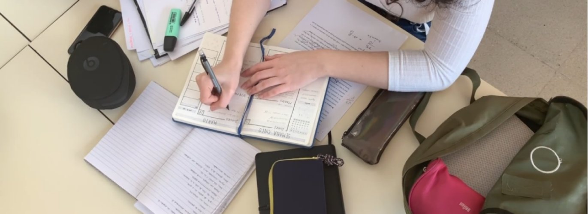

Learning Goals
In this Tutorial, you will use app-hero-image-v1.html as the starting point for a new app named app-hero-video-v1.html. You will make this change in one update.
- Replace a hero’s image background with a decorative video.
- Use a poster image while the video loads or cannot play.
- Retain the existing overlay and text controls.
- Export a complete web page with the correct relative asset paths.
1. Prepare your assets
- Open your websites folder in VS Code and locate apps/hero.
- Keep your working app-hero-image-v1.html file unchanged.
- Inside outputs/assets, create a new folder named videos.
- Into this new folder, download the hero-image.jpg image file below.

- Also into this new folder, download the video file below.
hero-video.mpg
| File | Location within the hero folder |
|---|---|
| Starting app | app-hero-image-v1.html |
| New app | app-hero-video-v1.html |
| Video | outputs/assets/videos/hero-video.mp4 |
| Poster | outputs/assets/videos/hero-poster.jpg |
| Generated page | outputs/hero-video.html |
2. Run the update prompt
- Copy the video-background update prompt supplied with this lesson into your AI.
- Use the following NEW FEATURE instructions in your AI prompt:
INSTRUCTIONS Let's adapt our existing Image Hero Block Generator to create hero blocks with a decorative video background. The current working app file is app-hero-image-v1.html. Create the new app, named app-hero-video-v1.html. Use the current code supplied below as your starting point. Preserve existing working features except those explicitly replaced below. Extend the existing settings object and named functions where appropriate. Avoid unrelated redesigns or refactoring. VIDEO BACKGROUND Replace the existing image background layer with a decorative video background. Assume this folder structure: - The app file is saved directly in the hero folder. - The video and poster image are saved in outputs/assets/videos. - Generated HTML pages will be saved directly in outputs. The supplied assets are: - hero-video.mp4: an MP4 video encoded with H.264. - hero-poster.jpg: a JPEG poster image. Use these exact relative paths in the app preview: - Video: outputs/assets/videos/hero-video.mp4 - Poster: outputs/assets/videos/hero-poster.jpg Use these exact relative paths in the exported page: - Video: assets/videos/hero-video.mp4 - Poster: assets/videos/hero-poster.jpg Define the exported paths once in JavaScript: const exportedVideoPath = "assets/videos/hero-video.mp4"; const exportedPosterPath = "assets/videos/hero-poster.jpg"; Use these constants when generating the exported video markup, poster fallback styling and poster preload link. Remove references to the previous hero-image.jpg asset. Do not add file uploads, asset selectors or URL inputs. VIDEO MARKUP AND LAYOUT Use a video element with: - muted - loop - playsinline - preload="metadata" - The appropriate poster attribute. - A source element with the appropriate video path and type="video/mp4". Treat the video as decorative: - Use aria-hidden="true". - Prevent keyboard focus. - Do not include native video controls. - Do not add a pause/play button. - Prevent the video layer from intercepting pointer events. Make the video fill the entire hero: - Position it absolutely within the hero. - Set its width and height to 100%. - Use object-fit: cover. - Use object-position: center. - Allow cropping without stretching. Preserve the semantic header element, responsive minimum heights and existing content spacing. Keep the video element in place when settings change. Editing text or changing colours, opacity, alignment or typography must not recreate the video or restart playback. POSTER AND PRELOAD Replace the previous image preload with a poster-image preload. In the head of the app, include: <link rel="preload" as="image" href="outputs/assets/videos/hero-poster.jpg"> In the head of the exported page, include: <link rel="preload" as="image" href="assets/videos/hero-poster.jpg"> Within each page, the preload, video poster attribute and poster fallback must reference exactly the same image path. Keep a poster fallback beneath the video. It should fill the hero using cover sizing and centred positioning. Show the poster until the video is actually playing. If the video cannot load or autoplay is blocked, leave the poster visible. Do not preload the video through a link element. PLAYBACK AND REDUCED MOTION Attempt muted autoplay when the page opens, unless the visitor prefers reduced motion. Use a small named playback-initialisation function: - Check prefers-reduced-motion before requesting playback. - Set the video’s muted property to true. - Call play() only when reduced motion is not requested. - Handle a rejected play() promise without an uncaught error. - Reveal the video after playback begins. - Keep the poster visible if playback fails. To avoid playback starting before the reduced-motion check, omit the autoplay attribute and initiate playback through this function. When reduced motion is requested, display the poster without starting the video. Listen for changes to the reduced-motion preference: - If reduced motion becomes enabled, pause and hide the video, revealing the poster. - If reduced motion becomes disabled, attempt muted playback again. Do not repeatedly retry blocked autoplay. Use the same playback behaviour in the app preview and exported page. Keep playback logic separate from the generator's editing and settings functions. OVERLAY AND EXISTING FEATURES Preserve the existing tinted overlay above the video and below the heading content. Defaults: - Solid black overlay. - Opacity: 0.4. - Gradient overlay: off. - H1 and H2 text: white. Preserve: - Overlay opacity slider from 0.1 to 0.9, step 0.05. - Solid overlay colour selection. - Gradient overlay checkbox. - Independent gradient start and end colours. - All four gradient directions. - Saved colour, direction and opacity settings when switching modes. - Tailwind colour palette and its active-target behaviour. - Independent H1 and H2 colours. - Direct plain-text heading editing. - Optional H2 and its Show subheading checkbox. - Independent font-family choices. - Independent letter-spacing sliders. - Left or centre alignment. - Minimum-height checkbox and existing responsive heights. - Fixed text-shadow-lg/30 effect on both headings. - Accessible labels, keyboard operation and visible focus. Apply opacity only to the overlay. Do not fade the video or heading content. Disable H2 controls and its palette target while H2 is hidden. Preserve its text and settings when restored. If H2 was the active palette target when hidden, select Start colour in gradient mode or Overlay colour in solid mode. HTML AND CSS Keep all styling in style elements in the head. Use named classes, Tailwind @apply and ordinary CSS where appropriate. Do not use inline style attributes. Retain: <script src="https://cdn.jsdelivr.net/npm/@tailwindcss/browser@4"></script> Place styles containing @apply in style elements with type="text/tailwindcss". Use clearly named classes for: - Poster fallback. - Video. - Overlay. - Heading content. Establish their stacking order explicitly: 1. Poster fallback. 2. Video. 3. Tinted overlay. 4. Heading content. Keep the hero styles shared between preview and export wherever possible. Handle their different asset paths explicitly. Preserve Tailwind palette variables and CSS linear-gradient() for overlay colours. Ensure all required styling is included in the exported page. COPY HTML Preserve the fixed Copy HTML button, accessible status message and manual-copy fallback. Export a complete standalone HTML document containing: - HTML5 doctype and lang="en". - Charset, responsive viewport and title. - The existing meta description: “Short, unique description of web page. Often used as the snippet shown in search results. About 120 characters is ideal.” - The hosted Tailwind script. - The poster-image preload. - All required hero, poster, video, overlay and heading styles in the head. - The semantic hero markup with the current heading text and selected settings. - H2 only when Show subheading is checked. - The small playback script required for autoplay, poster fallback and reduced-motion behaviour. The playback script is an explicit exception to the previous rule excluding JavaScript from exported pages. Exclude: - Generator controls and settings-management code. - Editing attributes and editing outlines. - Editor-only CSS. - Copy HTML button and copying code. - Manual-copy interface. Use only assets/videos paths in the exported page. Do not include outputs/assets/videos paths or references to the old image asset. Continue escaping edited text correctly. Keep any visible manual-copy output up to date. Only display a copying-success message after copying succeeds. Ensure closing script tags inside JavaScript strings are escaped correctly so they do not prematurely end the generator's script. SCOPE Do not add playback buttons, native video controls, uploads, asset selectors, URL inputs or unrelated features. Preserve the existing interface layout wherever possible. DELIVERY Return the complete app-hero-video-v1.html code in one HTML code block, without omissions. Include all required JavaScript. After the code, briefly explain where to save: - App: hero/app-hero-video-v1.html - Video: hero/outputs/assets/videos/hero-video.mp4 - Poster: hero/outputs/assets/videos/hero-poster.jpg - Generated page, for example: hero/outputs/hero-video.html Explain that generated pages must be saved directly in outputs for their relative asset paths to work. Include a short manual checklist covering: - Video and poster loading in both the app and exported page. - Matching poster preload, poster attribute and fallback paths. - Muted, looping playback when autoplay is permitted. - Poster fallback when playback is blocked or the video is unavailable. - Poster-only display when reduced motion is enabled. - Responsive cropping without stretching. - Solid and gradient overlays, all four directions and opacity. - Heading editing without restarting playback. - Existing text controls and H2 visibility. - Copy HTML, manual-copy fallback and the exported result. Clearly state whether the app has actually been browser-tested. CURRENT CODE [Paste the complete current app-hero-image-v1.html file here.] - Open app-hero-image-v1.html in VS Code and copy its complete code.
- Paste the code beneath CURRENT CODE, replacing the placeholder instruction. Submit the prompt.
- Copy the returned HTML into a new file and save it as app-hero-video-v1.html directly inside hero.
- Save your prompt in the prompts folder as hero-prompt-video.txt.
The update replaces the image layer with a video and poster fallback. It preserves solid and gradient overlays, opacity, editable headings, fonts, letter spacing, colours, alignment and minimum height. This version has no playback buttons or native video controls.
3. Test your app
Open the new app in a browser. Keep an internet connection available for the hosted Tailwind script.
- Check that the poster appears while the video loads. When playback is permitted, the video should play silently and loop.
- Resize the browser. The video should fill the hero without stretching, cropping where necessary.
- Try solid overlay colours, gradient start and end colours, and all four gradient directions.
- Move the opacity slider. Only the overlay should change opacity; the headings should remain fully opaque.
- Edit the headings and change their fonts, spacing, colours and alignment. These actions should not restart the video.
- Hide and restore H2. Its text and settings should survive, and its controls should disable while hidden.
The app checks the visitor’s reduced-motion preference before attempting playback. With reduced motion enabled, it should display the poster instead. If autoplay is blocked or the video fails to load, the poster should remain visible and the other controls should still work.
4. Generate a web page
- Choose your text and design settings, then click Copy HTML.
- If copying is unavailable, copy the code from the labelled manual-copy textarea.
- Paste the code into a new VS Code file. Save it as hero-video.html directly inside outputs.
- Open the saved page in your browser and compare it with the preview.
The two pages use different relative paths to the same assets:
| Asset | App preview | Exported page |
|---|---|---|
| Video | outputs/assets/videos/hero-video.mp4 | assets/videos/hero-video.mp4 |
| Poster | outputs/assets/videos/hero-poster.jpg | assets/videos/hero-poster.jpg |
Save generated pages directly in outputs so these paths work. The exported page includes a small playback script for reduced motion, autoplay and poster fallback. It should not include the generator’s controls or editing code.
5. Inspect the HTML and CSS
Open the exported page in VS Code. Locate its semantic <header>, heading elements and decorative <video>.
mutedkeeps the video silent;looprepeats it;playsinlinerequests playback within the page.- The
posterattribute identifies the still image, and the source element identifies the MP4 file. object-fit: coverandobject-position: centerfill the hero without stretching the video.- Separate layers place the poster beneath the video, the overlay above it, and the heading content on top.
- Overlay opacity affects only its own layer.
This version deliberately omits the autoplay attribute. Its playback function checks reduced motion before calling play() and handles a blocked playback request.
Find this poster preload in the exported head:
<link rel="preload" as="image" href="assets/videos/hero-poster.jpg">The preload path, video’s poster attribute and poster fallback styling must all use assets/videos/hero-poster.jpg. The preload begins fetching the still image early; it does not start the video.
Final checks
- Both assets load in the app and exported page.
- The exported paths contain
assets/videos/, without the app’soutputs/prefix. - Playback is muted and looping when permitted; no playback controls appear.
- Reduced motion displays the poster. Try changing the preference while the page is open.
- Temporarily rename the video file and reload to test the poster fallback. Restore the filename afterwards.
- Overlay settings and edited text survive control changes; hidden H2 is omitted from the export.
- Long text wraps without clipping and the hero works at mobile and desktop widths.
- Copy HTML works, or the manual-copy textarea supplies current output.
Practice: generate two pages using the same video, one with a solid black overlay and one with a gradient. Compare heading readability as the video changes behind the text.